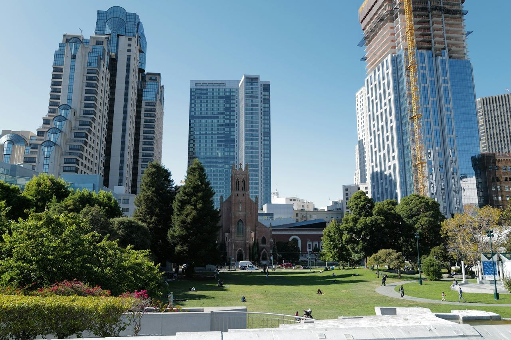

South of Market
The wide blocks west of Fourth Street, between Market and Harrison. Coverage here begins with the buildings named in the city's public-art and privately-owned-public-open-space inventories.

Map
Named buildings and landmarks
-
1
-
2
-
3

-
4
-
5
-
6
-
7
-
8

-
9
-
10
-
11
-
12

Also here: California Casket Company Building, Paul Wood Warehouse, SOMArts, Alkain Hotel, Central Hotel, Guggenheim Building/Heuter, Haas Candy Factory, Hale Brothers Department Store, Home Telphone Building, Hulse Bradford Building, Jackson Brewing Company malt house, Jackson Brewing Company malt kiln and engine house, Jackson Brewing Company stock house, National Dollar Store, National Dollar Store, Oakwood Hotel, Orlando Hotel, Taylors, Weed & Kingwell’S California Brass Works Foundry, David Hewes Building, Forrest Building, The Emporium, Westfield Center, Odd Fellows Temple, Union Furniture Store, Dr. Charles Bauer Building, Milwaukee Furniture Co, R. P. Doolan Building, Municipal Building, Rose Hotel/Sunnyside Hotel, (Old) Hale Brothers Department Store, Alden Hotel, Auburn Hotel, Bayanihan House, Federal Hotel, Hotel George, Hotel Ysabel, Shreve & Company Factory, Hotel Lankershim, South of Market/Gene Friend Recreation Center, Keystone Hotel, McLaughlin Building, Chronicle Hotel, ARC Studios and Gallery, California Brass Works, San Francisco Remedial Loan Association Building, Strand Theater, Timothy Hopkins Warehouses, Pioneer Plate and Window Glass / Simon Brothers, Old: S.F. Pie Co, Thiebaut Brothers Box Factory / Republic Truck Showroom, Pg&E Warehouse, Richardson & Walsh Engineers and Electricians, Weed & Kingwell’S California Brass Works Foundry, Wm. B. Wagnon Building, L. Lurie Building, Southern Police Station, Diamond Patent Show Case co. Salesroom, Electric Manufacturing Co, Confectioner's Exchange, Pickwick Hotel, Pickwick Hotel, Victor Equipment Company Building, W M Willett Construction / Camelline Building, Western Manufacturing Company Building, Brunswick-Balke-Collender co. Billiard Table Manufacturing, Bucher Building, Colgate Building, San Francisco Chronicle Building, Wobbers Inc. Printing & Engraving, Bulletin Building, Dohrmann Hotel Supply Co, Murschen & Hoelscher Building, San Francisco Flower Mart, Hale Brothers warehouse, Toledo Scale Co, Western Merchandise Mart, National Sales & Service Co, California Brass Works, Kingan Company Wholesale Meats, St. Patrick'S School Gymnasium, San Francisco Flower Mart, San Francisco Flower Mart, San Francisco Flower Terminal, Woolf House Senior Citizens Apartments, Bank of America data center, San Lorenzo Ruiz Center, Southern Police Station, California DataMart, Paul Wood Warehouse, Mendelsohn House, One Trinity Center, Brotherhood of Teamsters Hall, Sumner Rowhouses, Canon Kip Community House, Knox Hotel, Demolished 4/16/93, Tutubi Park, Westfield San Francisco Centre, Edith Witt Senior Community, Natoma Family Apartments, Hampton Inn San Francisco Downtown/Convention Center, S E Massengill Co Pharmaceuticals, Dempster Brothers Printing, Embassy Theater, Federal Building, Moscone Center, Pg&E Electric Substation T, The Panoramic.
Streets documented so far
- 10th Street
9 buildings, built 1923–1929; 8 in the Western SOMA Light Industrial and Residential Historic District. - 11th Street
3 buildings, built 1919–1930; 3 in the Western SOMA Light Industrial and Residential Historic District. - 7th Street
8 buildings, built 1903–2020; 1 in the Western SOMA Light Industrial and Residential Historic District. - 8th Street
6 buildings, built 1916–1990. - 9th Street
2 buildings, built 2011–2014. - Bluxome Street
10 buildings, built 1916–2016; 3 in the Bluxome Townsend Historic District. - Boardman Place
1 building, built 1912. - Brannan Street
24 buildings, built 1905–1989; 3 in the Clyde and Crooks Historic District. - Brush Place
1 building, built 1926; 1 in the Western SOMA Light Industrial and Residential Historic District. - Bryant Street
56 buildings, built 1905–2005; 1 in the SoMa LGBTQ Historic District. - China Basin Street
1 building. - Clara Street
29 buildings, built 1906–1991. - Clementina Street
16 buildings, built 1909–2008. - Clyde Street
4 buildings, built 1923; 4 in the Clyde and Crooks Historic District. - Columbia Square Street
1 building, built 1921. - Converse Street
1 building, built 1924. - Decatur Street
5 buildings, built 1900–1918. - Division Street
1 building, built 1924. - Dore Street
1 building, built 1924; 1 in the Western SOMA Light Industrial and Residential Historic District. - Falmouth Street
2 buildings, built 1912–1990; 1 in the SoMa LGBTQ Historic District. - Fifth Street
29 buildings, built 1900–1998; 3 in the Kearny-Market-Mason-Sutter Conservation District. - Folsom Street
35 buildings, built 1906–1988; 4 in the SoMa LGBTQ Historic District. - Fourth Street
26 buildings, built 1907–2023; 1 in the SoMa LGBTQ Historic District. - Freelon Street
13 buildings, built 1907–1988. - Grace Street
1 building, built 1900; 1 in the Western SOMA Light Industrial and Residential Historic District. - Hallam Street
3 buildings, built 1989–1991. - Harriet Street
1 building, built 1921; 1 in the SoMa LGBTQ Historic District. - Harrison Street
36 buildings, built 1909–2018; 2 in the SoMa LGBTQ Historic District. - Heron Street
1 building, built 1900; 1 in the Western SOMA Light Industrial and Residential Historic District. - Howard Street
30 buildings, built 1900–2008; 1 in the SoMa LGBTQ Historic District. - Jessie Street
5 buildings, built 1907–1923; 3 in the Mint-Mission Conservation District. - Langton Street
2 buildings, built 1928–1975. - Lapu-lapu Street
1 building. - Lusk Street
3 buildings, built 1917–1995; 3 in the Clyde and Crooks Historic District. - Market Street
1 building, built 2006; 1 in the Kearny-Market-Mason-Sutter Conservation District. - Mary Street
1 building, built 1910. - Merlin Street
2 buildings, built 1943–1968. - Minna Street
8 buildings, built 1900–1980. - Mint Plaza
2 buildings, built 1907–1919; 2 in the Mint-Mission Conservation District. - Mint Street
1 building, built 1916; 1 in the Mint-Mission Conservation District. - Mission Street
2 buildings, built 2015; 1 in the Mint-Mission Conservation District. - Morris Street
4 buildings, built 1955–1956. - Moss Street
15 buildings, built 1906–1928; 15 in the Western SOMA Light Industrial and Residential Historic District. - Natoma Street
1 building, built 2014. - Oak Grove Street
5 buildings, built 1926–1988. - Perry Street
1 building. - Rausch Street
1 building, built 1914; 1 in the Western SOMA Light Industrial and Residential Historic District. - Ritch Street
8 buildings, built 1902–1955; 5 in the Clyde and Crooks Historic District. - Rizal Street
3 buildings, built 1979–1982. - Rodgers Street
1 building, built 1914; 1 in the Western SOMA Light Industrial and Residential Historic District. - Russ Street
1 building, built 1927. - Sherman Street
1 building, built 1900. - Shipley Street
20 buildings, built 1906–1991; 1 in the SoMa LGBTQ Historic District. - Sixth Street
39 buildings, built 1900–1995; 14 in the Sixth Street Lodging House Historic District. - Stevenson Street
4 buildings, built 1913–1940; 2 in the Mint-Mission Conservation District. - Stillman Street
13 buildings, built 1907–1991. - Sumner Street
1 building, built 1991; 1 in the Western SOMA Light Industrial and Residential Historic District. - Tehama Street
21 buildings, built 1906–2002. - Third Street
16 buildings, built 1905–1990; 1 in the Clyde and Crooks Historic District. - Townsend Street
13 buildings, built 1906–1987; 4 in the Bluxome Townsend Historic District. - Washburn Street
2 buildings, built 1906–1924; 2 in the Western SOMA Light Industrial and Residential Historic District. - Welsh Street
5 buildings, built 1906–1986. - Zoe Street
4 buildings, built 1907–2024.
Parks and public spaces
- Eugene Friend Rec Center
Neighborhood park or playground, 1.2 acres. - Howard & Langton Mini Park
Community garden, 12,197 sq ft. - Mission Creek Park
Neighborhood park or playground, 17.2 acres. - UN Plaza
Civic plaza or square, 2.7 acres. - Victoria Manalo Draves Park
Neighborhood park or playground, 2.7 acres.
Historic districts here
- Bluxome Townsend Historic District
- Civic Center Historic District
- Clyde and Crooks Historic District
- Kearny-Market-Mason-Sutter Conservation District
- Market Street Theatre and Loft Historic District
- Mint-Mission Conservation District
- San Francisco Neighborhood Movie Theater Historic District (Discontiguous)
- Sixth Street Lodging House Historic District
- SoMa LGBTQ Historic District
- South End Historic District
- South End Historic District Addition
- Western SOMA Light Industrial and Residential Historic District
Adjacent neighborhoods
Market Street is the northern boundary, with Union Square and the East Cut on the other side of it and the Tenderloin north-west. The Mission begins south-west beyond Division Street, and South Beach and Mission Bay lie south-east towards the water.